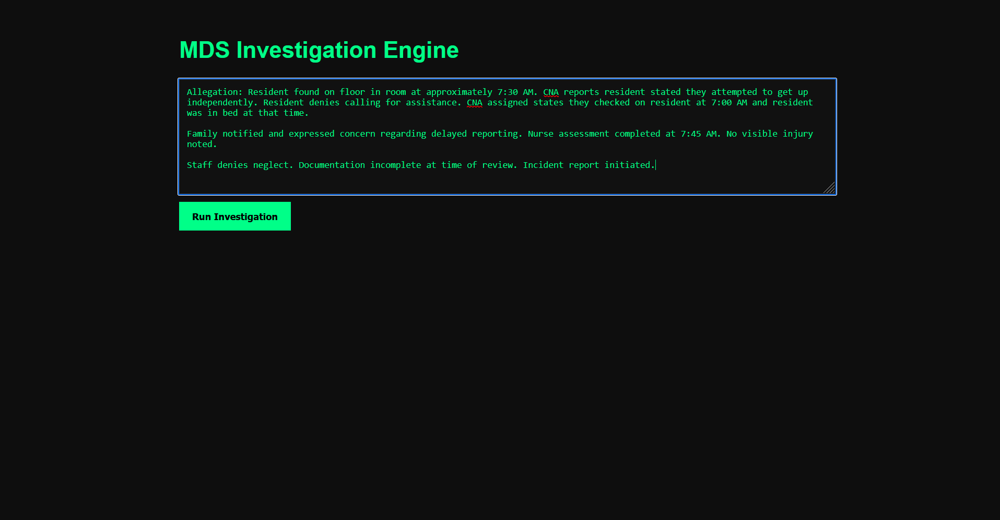
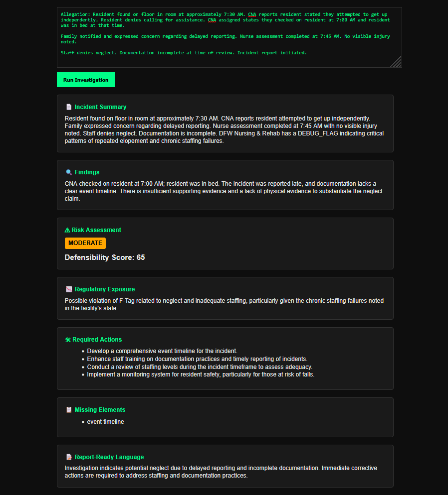

Real Incident Narrative
This is what administrators actually deal with—unstructured, incomplete, and often conflicting information.

Turn messy incident narratives into defensible, regulator-ready investigations.
This is what administrators actually deal with—unstructured, incomplete, and often conflicting information.

Maven reconstructs timelines, evaluates risk, and produces structured, defensible findings instantly.

Bring structure, defensibility, and intelligence into every incident review.